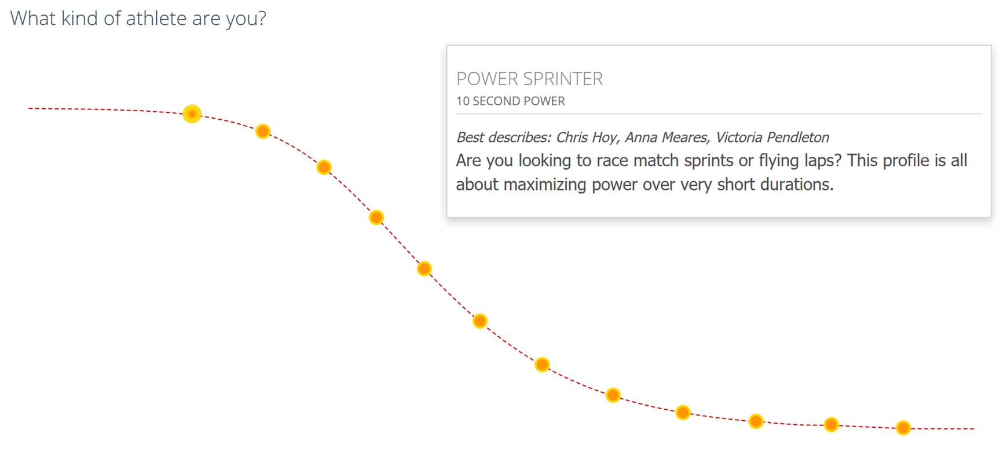
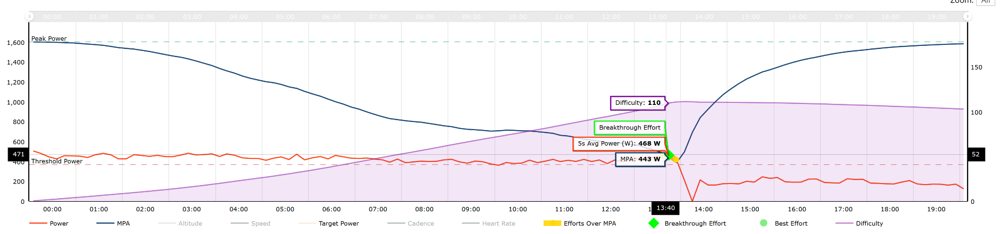

The secret of a
good sprint
Last
updated Mon 02-Sep-2019
--- suggestions, recommendations,
requests, comments, … or just that you found it useful -> sigma.fusion at pm.me
Special shout out and thanks to Ludovic Pollet for reminding me I had to work on this. 😊
Please note that while I’m only came to cycling (and on Zwift) by
accident and very late in the game, I was very proficient at another sport
where you need maximum neuromuscular speed and explosive power, so getting
there is/was the same for me.
Ah!
the sprinter, the guy/girl hiding in the bunch all day just to jump out in the
last few 100 meters to steal the show, get all the glory and win the
race…while others are doing all the hard work.
Yes, that does exist and has its purpose – to win, and it’s often
not part of people’s training and/or abilities. However, I would advocate
that you try to be an all-rounder too with a good combination of FTP, VO2Max,
MPA (Max Power Available), 5 secs power and endurance abilities. First and
foremost as a fitness goal, but also to allow you to stick with the rouleurs on the flats, the climbers trying to drop you on
the climbs, and the sprinters snuffing you on the line…there’s many
ways to skin a cat and to win a race! Achieving this is very hard (thus fun)
and there are trade-offs, as these are linked to different abilities, but you
can work on that through polar/specific training.
Topics
Yes, lots of
things but sometimes marginal gains will make the difference.
- Equipment setup
- Technique
- Mindset
- Sprinter and muscle types
- Race “smarts” and ramp-up
- Training, power output and discipline
Equipment setup
Captain
obvious here, but you will be putting a lot of power (thus stress) on your
hardware and your KNEES. This can go very ugly if you don’t get this
right. Indoors, you can’t realistic sprint on wheel-on trainers (they are
all shit anyway), get a proper magnetic-based one. I have a few Neo (main one
is a 2 now) and they are all been flawless, except one where the innards at the
freehub level exploded and the frame cracked (albeit after 2 years of hard
duty).
Knees
issues
Your body is
part of a mechanical system with the bike, while there are oodles of YouTube
videos on the subject, you need to invest some time in 1) finding the
“right” bike size 2) saddle position and 3) cleat positions for
left and right…they are not the same! I tend to go a tad smaller frame
size (for a more compact position) combined with a longer stem. You don’t
want your feat arching inward or outward and/or have your knees
“bowing”. It’s bad for proper mechanical flow and you are in
for a world of pain physically if your position is bad. Parallel and smooth
is the way to go. I would suggest you video record yourself on the bike
from the side, front and back to see how appropriate and smooth your body
position is.
Cleat issues
You
don’t want to “uncleat” in the middle of a sprint, so ratchet
up that spring tension and learn how to uncleat properly. Indoor that’s
less of a problem anyway.
Chain,
cassette and ring issues
Explosive
application of power will chew up these consumables, make sure you check your
setup *frequently* as the cassette and chain will loosen up, leading to
unwanted (at the worst possible moment of course) gear jumping or chain
derailing. Front rings will get trashed by sprinting; the metal gets chipped
away on the teeth. Look for “shark” teeth, if you have them, time
for a replacement. When this happen the likely of derailing increases
significantly.
As a general rule, I replace my chain and big ring every 2000 km. Look for
promotions and buy in bulk, prepare to destroy equipment and have spares
available!!!
Handlebars
I know it
sounds dumb but having a handlebar issue (remember, your entire body will put a
lot of stress on the bike) because of lose bolts on the stem is a bummer.
I’m a fan now of integrated posts, once you have found your right setup,
because less shit can go wrong.
Technique
It’s
just pedaling right? Well yes and then some. Stay in control, relax,
don’t freak out. Focus on your ramp up, cadence, having a smooth
left/right weight transfer shift and mobilizing ALL your muscles to
transfer power to the pedals. Hands on the drops, get low, head in the
handlebar, out of the saddle…and during the last 5 secs DO NOT LOOK AT
THE FINISH LINE OR OTHERS = distraction. Focus on going mental and reaching
your 5 secs maximum in your last 150/100m if possible, but unlikely (especially
at the end of a race), it will equal your MPA.
Coordination + power + efficiency = speed
Cadence vs big gearing
Lots of
contradictory things have been said and written on the subject, but watts are
watts. While I have yet to see somebody running out of gears with a 53-11, it doesn’t
necessary mean that it’s the best gearing to sprint or the most optimal
one for you. Some have better cadence abilities, others at pushing bigger
gearing. I have tried sprinting at super high cadence with a smaller gear, but
I’m better at using bigger gearing, and if I do a proper ramp-up for the
last 200m I’m always on 53-11.
Unless you are exceptionally strong, rested and gifted; jumping from say a
53-16 to 53-11 in the last 200m requires way too much power vs. actual return
and is a perfect way to lose.
Mindset
Even
if you are not racing, think of your training as an actual race effort. The
more you do this, the easier it will be in an actual race; besides, racing is
fun! meaning positive association. Focus on improving your times, every time
you are faster on a segment than your previous effort, it’s a great win,
regardless of how other are doing. Focus on the technical aspects and remember,
you’re out there to go as fast as possible.
Sprinter and muscle types
I think it’s important to make the distinction between the various
sprinter profiles like Xert does and see if you want,
can or should specialize.
The Power Sprinter (typically > 80 kg, > 2000W and/or > 25W/kg)
Bulky monsters, the ones with the tree trunk thighs, very specialized and
useful only for the track/velodrome IMO, as they have too much weight to carry around.

The Road Sprinter (typically
< 80 kg, < 2000W and/or < 25W/kg)
Should
be your objective if you are looking to be a good all-rounder too.
Type II “fast twitch” muscle fibers
To be a road sprinter you don’t need/want to bulk up like a
body builder and spend your days lifting weights. You want to focus on
neuromuscular power and developing your type II “fast twitch”
muscle fibers. You have seen pics and videos about BAMF special forces guys
that look super lean and unimpressive, yet lighting fast and can choke you to
death with a single hand? That should be you. To a large extent, this is
antagonistic to type I “slow twitch” fibers, which are better
suited for low power endurance. It is extremely difficult impossible to
be both very good at power and endurance at the same time, but with a lot of
hard work, you can become very good at both. You will likely have a natural
preference.
Skeletal
muscle enzymes and fiber composition in male and female track athletes - DL
Costill, J Daniels, W Evans, W Fink… - Journal
of applied …, 1976 - physiology.org
Effect
of training on enzyme activity and fiber composition of human skeletal muscle
- PD Gollnick, RB Armstrong, B Saltin…
- Journal of applied …, 1973 - physiology.org
If you are getting older, you might want to read Effects
of aging on Type II muscle fibers: a systematic review of the literature -
F Brunner, A Schmid… - Journal of aging …, 2007 -
journals.humankinetics.com
Race “smarts” and
ramp-up
Not
managing this is where good sprinters go to die. While they somewhat share the
same dynamics, I will make the distinction between clocking a good time for a
segment to land a green jersey vs. winning a race, as the later involve things
such as terrain, opponents at play, team dynamics, your real-time fitness level
at the end of the event and so forth.
Overall I will split your effort in 1) the last two km 2) the last 400m 3) the
last 200m 4) the last 150/100m
Landing a good solo time in a Zwift sprint segment
- Hide in the bunch well below threshold and rested
- Before getting to the last two km of the entry
gate, drop at the back without losing too much speed, and see how
the bunch is setup to leverage a possible draft effect for the ramp-up
and/or segment
- At 1 km start ramping up gradually
- At 400m mark of the entry gate you should
be at least at 40% MPA, so for me around 650W (out of 1600/1700W)
- At the 150/100m mark of the entry gate
it’s full gas already, as you need to enter the gate at your maximum
speed. If you have not, you will not be competitive
- There’s no last 50m as you are alone against the
clock
- The Tempus Fugit sprint is a special case, at it is
very long. For that one I do the segment at around 1100W constant starting
50m from the entry gate, which is more or less my ability for a 30 secs
effort. A good time on that one is between 27 and 30 secs
- Here again, the Xert fitness
signature power curve (in secs in the graph) is a great way to plan your
effort

Winning
a race
Here many
things are at play. Are you racing solo or as a team? As a team, do you have a
good fixer and lead out? Do they know what they are doing? What’s the
terrain? Current fitness and abilities? Those of your opponents? Are you in a
bunch or against a single opponent?
- If you are in a bunch and solo, you will likely do like
everybody else, hide, wait, slipstream and outmuscle in the last 200 or so
meters. Here natural abilities and fitness are supreme. If you are racing
against a superior opponent, you’re already SOL
- If you are a total boss, and depending on terrain
and/or freshness level, you can always try to just outmuscle everybody in
the last km. Especially good in hilling punchy terrain, as the draft is
less at play, and if you have a helmet PU
- If you have teammates, before getting to the last km of
the finish line, you need a “fixer” who will make sure
that the team is well placed and starts ramping up gradually from 40% MPA
and/or with the flow of the other teams to position the lead out
- At the 400m mark your lead out (strong 3 to 4 mns high power pursuiters
are perfect in this role) kicks in, and should be at least at 80% MPA and
ramping-up to his/her 100% before the last 200m
- At the 200m your lead out is going full gas
- At the 150/100m mark (5 secs) you leverage your lead
out’s draft and your extra MPA margin to earn your top dog sprint
role
Training,
power output and discipline
Probably what you came here for, yet all the above can kill anything you will
gain from here. For our purpose here, I will only focus on the “road
sprinter” profile. Like for anything regarding fitness, it needs to be
targeted, focused and you will need to do reps…lots of reps. I mean 100s
if not 1000s of them, lucky you. As for everything else, I don’t do weird
shit like single-leg drills, high cadence training or other Harry Potter
training – no irrefutable data or studies (without having one 180°
opposed to it) actually supports all this bro-science BS.
I will never be even remotely competitive on a basketball court or as a
swimmer. Training, especially over the long run, can help to some extent to get
you there, but realize that not everybody is made equal.
Maximum top end power (MPA) is your 5 secs capacity, while your overall
sprinting power will be anything from 5 secs to 2 mins. Most people (untrained)
start to roll off dramatically after 15 to 20 secs, so if you want to be a good
sprinter, you need at least 30 to 40 secs of sustained maximum power. You want
to win, think 60 secs to weed out > 99% of riders.
If you can pull off a high MPA *and* long high-power sprints, it opens lots of
options for the win…if you are not dropped beyond all hope before getting
there. You can then focus on the actual strategy specific to the race
conditions and competitors.
General training to increase your overall fitness
You want to be a good sprinter? You need to have a good fitness level. I
have not found anything better and more efficient than running fast 5k series.
This will help your VO2Max too. While this is optional, I do it with a weighted
vest (don’t use ankle ones!). If you are lucky you have access to snow,
trying to run in the snow 😊.
I suggest you invest on a quality treadmill to manage your knees too instead of
running on hard surfaces like roads. You can also use it to do HIIT style
training to increase your anaerobic capacity.
A cheaper/different approach is to use a rowing machine, which contributes to
your entire body, but also can bulk up your upper body strength. As a cyclist
or runner you don’t want/need that though.
Peak power intervals to increase your MPA
You will often see me slipping this kind of training in a steady slow burn
group ride trough sprinting an official segment or punching full gas (you go
mental on your bike) a short and steep incline – e.g. Watopia
tunnel exits. These are very good to maximize peak intensity load and
neuromuscular efficiency to increase top end (5 secs) power. These are very
difficult on the body, especially at the beginning, so you should be watchful
for muscles and joints issues. If it hurts, spread them out or give your body
time to recover. You should have a status monitoring system like Xert to avoid “overdoing it”, which then
becomes counterproductive.
Quantity does not equal quality, riding oodles of km at a slow pace every week
doesn’t make you a faster cyclist, same goes for sprinting. They need to
be hard and fast.

The best way to do them is to put your 53-11 (or biggest gear you can muster in
a sprint with a good cadence) and ride very slowly to the foot of the hill
(like at 20 rpm), then go full gas and spin out or get to 10, 20 or 30 secs
depending on your level from an almost dead start. If you have not followed
what I mentioned in “Equipment setup”, you will likely derail, hurt
yourself and/or damage your chainring. It’s even worst if you do it from
a dead start, especially once you have become more powerful. You are on a
somewhat delicate multi-speed bike built to target a production cost, not a
specialized (punt intended) fixie track bike one-off.
Race winning long sprints
You want to breakaway in the last (two) km(s) to soften your opponents (if they
can actually follow in the 1st place) and prepare your move for the
kill? Short (less than 20 mins) hard as fuck intervals where you drain your MPA
to actual wattage with a sustained breakaway style effort. This really helps
building your high power for several mins capacity, fatigue resistance at the
end of the sprint, and contributes to both your FTP and MPA; it’s all
gravy! The Bologna TT is perfect for this type of “boxed” effort,
as variables like drafting, making it longer and other riders’ tactics
are removed. Especially effective in hilly terrain and if you can drop wheel
suckers and drain your opponents before finishing them off. This is it.
It’s also very good to land “breakthrough” effort and push
you to push back your limits. If possible, practice ramping-up through your
gears while increasing the cadence.
Another, perhaps even better
because it is shorter, boxed effort is the Watopia Volcano
climb. A typical example after a 60 mins slow group ride done through an
“after-party” KOM event. You will find many of those, use the main
event as a warm-up and hammer the KOM proper.
Zwift Structured
Forget the Dimension Data Zwift Academy stuff, and focus on more hardcore and specialized
training that you can load directly in Zwift…these are hard. 😊
Make sure your FTP is correctly setup in Zwift first. The workouts are based on
% of your FTP.
Copy the following text into flat files to your Zwift system following this
article: https://zwift.com/news/11792-importing-and-sharing-custom-zwift-workouts
Power micro-intervals.zwo
<workout_file>
<author>Sigma</author>
<name>Power micro-intervals - Sigma</name>
<description>5 secs target</description>
<tags><tag name="Sigma"></tags>
<workout>
<SteadyState Duration="300.00000" Power="0.5000000"/>
<SteadyState Duration="24.00000" Power="3.0000000"/>
<SteadyState Duration="240.00000" Power="0.7000000"/>
<SteadyState Duration="13.00000" Power="3.0000000"/>
<SteadyState Duration="237.00000" Power="0.7000000"/>
<SteadyState Duration="13.00000" Power="3.0000000"/>
<SteadyState Duration="236.00000" Power="0.7000000"/>
<SteadyState Duration="13.00000" Power="3.0000000"/>
<SteadyState Duration="236.00000" Power="0.7000000"/>
<SteadyState Duration="14.00000" Power="3.0000000"/>
<SteadyState Duration="248.00000" Power="0.7000000"/>
<SteadyState Duration="14.00000" Power="3.0000000"/>
<SteadyState Duration="249.00000" Power="0.7000000"/>
<SteadyState Duration="126.00000" Power="0.5000000"/>
<SteadyState Duration="19.00000" Power="3.0000000"/>
<SteadyState Duration="244.00000" Power="0.7000000"/>
<SteadyState Duration="14.00000" Power="3.0000000"/>
<SteadyState Duration="249.00000" Power="0.7000000"/>
<SteadyState Duration="13.00000" Power="3.0000000"/>
<SteadyState Duration="236.00000" Power="0.7000000"/>
<SteadyState Duration="13.00000" Power="3.0000000"/>
<SteadyState Duration="237.00000" Power="0.7000000"/>
<SteadyState Duration="13.00000" Power="3.0000000"/>
<SteadyState Duration="236.00000" Power="0.7000000"/>
<SteadyState Duration="13.00000" Power="3.0000000"/>
<SteadyState Duration="237.00000" Power="0.7000000"/>
<SteadyState Duration="300.00000" Power="0.5000000"/>
</workout>
</workout_file>